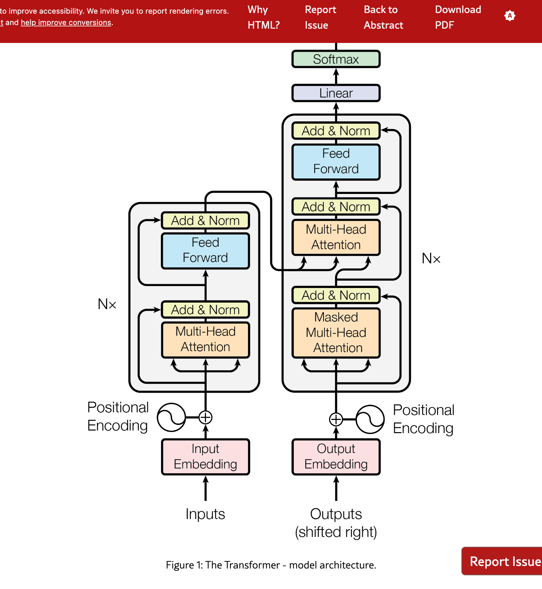

📖 Attention Is All You Need
深度解析系列
第 1 頁：Abstract（摘要）與 Introduction（引言）
一、Abstract（摘要）解析
The dominant sequence transduction models are based on complex
recurrent or convolutional neural networks that include an encoder and
a decoder. The best performing models also connect the encoder and
decoder through an attention mechanism.
目前主流的序列轉換模型（sequence transduction
models）都基於複雜的遞迴神經網路（RNN）或卷積神經網路（CNN），這些模型包含一個編碼器（encoder）和一個解碼器（decoder）。表現最好的模型還會透過注意力機制（attention mechanism）來連接編碼器和解碼器。
🔤 先理解基礎：什麼是「Token」？
在理解向量之前，我們需要知道電腦如何「切割」文字。
💡 生活類比：閱讀文章的方式
問題：當你讀一篇文章時，你是一個字母一個字母讀，還是一個「詞」一個「詞」讀？
-
❌ 字母級別："A-t-t-e-n-t-i-o-n" → 太慢，語義分散
- ✅ 詞級別："Attention" → 快速理解語義
Token 就是 AI 的「閱讀單位」
Token 可以是一個完整的詞、詞的片段、或標點符號。
📊 範例：英文分詞
原文： "I love playing football."
Tokens: ["I", "love", "play", "ing", "football", "."]
數量： 6 個 tokens
⚠️ 中英文 Token 的差異（初步認識）
核心事實：中文的 token 數量通常是英文的
2-3 倍！
英文："Hello world" → 2 tokens
中文："你好世界" → 6-8 tokens
為什麼？→ GPT 的分詞模型主要針對英文優化
💰 為什麼 ChatGPT 用 Token 計費？
簡單答案：因為計算成本與 Token 數量成正比。
- 1 個 Token = 1 次向量運算
- Token 越多 → 計算量越大 → 成本越高
- 這就是為什麼中文對話通常比英文貴
💡 想深入了解？
Token 的詳細分詞技術（BPE）、為何中英文效率差異、以及 Token
計費的經濟學，我們將在第 5 頁深入探討。
🧮 先理解基礎：什麼是「向量」？
現在我們知道文字被切成 token 了，接下來看 AI 如何「理解」這些
token。
💡 生活類比：顏色的數字表示
問題：電腦如何理解「紅色」？
- ❌ 電腦不懂「紅色」這兩個字
- ✅ 但它懂數字：RGB = [255, 0, 0]（紅255、綠0、藍0）
這個
[255, 0, 0]
就是一個三維向量，用三個數字表示一個顏色。
🔤 同理：電腦如何理解「單字」？
| 單字 |
人類理解 |
電腦表示（向量） |
| 國王 |
「君主、男性、權力...」 |
[0.8, 0.9, 0.1, -0.3, ...]（512個數字） |
| 女王 |
「君主、女性、權力...」 |
[0.8, -0.7, 0.1, -0.3, ...]（512個數字） |
| 蘋果 |
「水果、紅色、圓形...」 |
[-0.2, 0.1, 0.7, 0.5, ...]（512個數字） |
關鍵：相似的概念，向量會很接近！
- 「國王」和「女王」的向量很像（都是君主）
- 「國王」和「蘋果」的向量差很多（完全不同類別）
🔧 工程類比：為什麼需要向量？
類比：GPS 座標
- ❌ 「台北101」→ 電腦無法計算距離
- ✅ (25.034, 121.565) → 可以用數學公式算出到其他地點的距離
同理：單字向量化
- ❌ "king" (文字) → 無法做數學運算
- ✅ [0.8, 0.9, ...] (向量) → 可以計算相似度、可以做加減乘除
❓ 為什麼是 512 維？（為什麼不是 10 或 10000？）
這是經驗和實驗的結果：
-
太小 (10維)：無法表達複雜的語義（就像只用3個數字很難描述一個人的所有特質）
-
太大 (10000維)：計算成本太高，而且容易過擬合（記住訓練資料而不是學到通用規律）
-
剛剛好 (512維)：在「表達能力」和「計算成本」之間取得平衡
類比：地圖的解析度
- 10維 = 超低解析度地圖（只能看到國家）
- 512維 = 中解析度地圖（可以看到街道細節）
- 10000維 = 超高解析度（能看到每塊磚頭，但檔案太大、太慢）
🔍 什麼是 Attention Mechanism（注意力機制）？
現在我們知道單字變成了向量，接下來看 Attention
如何使用這些向量。
💡 生活類比：在圖書館找書
情境：你走進圖書館，想找一本關於「深度學習」的書。
- 你的需求 (Query)：「深度學習」
-
書架上的標籤 (Keys)：每本書的關鍵字（機器學習、深度學習、統計學...）
- 書本內容 (Values)：實際的書籍本體
Attention 的運作過程：
-
你用「深度學習」(Query) 去比對每本書的標籤 (Keys)
-
計算相關度分數：「深度學習」這本書 →
100分，「機器學習」→ 80分，「烹飪」→ 0分
-
根據分數加權提取：主要拿「深度學習」那本書
(Value)，稍微參考「機器學習」
為什麼叫 "Attention"（注意力）？
就像人類閱讀時，我們不會平等地看每個字，而是專注於（attend
to）與當前理解相關的關鍵詞。Attention 機制讓模型學會「該注意哪裡」。
💡 更多技術細節：
Query、Key、Value
的數學計算、向量內積、加權平均等詳細機制，我們將在第 3
頁深入探討。
📊 背景知識：什麼是序列轉換（Sequence Transduction）？
序列轉換：將一個序列轉換成另一個序列的任務。
- 機器翻譯：英文句子 → 中文句子
- 語音辨識：音訊波形 → 文字
- 文本摘要：長文章 → 短摘要
🔧 傳統方法架構（2017年前）
| 模型類型 |
代表 |
優點 |
問題 |
| RNN/LSTM/GRU |
Seq2Seq |
能處理變長序列 |
❌ 無法並行化
❌ 長距離依賴問題 |
| CNN + Attention |
ConvS2S |
可並行化 |
❌ 需要堆疊多層才能捕捉長距離 |
🔧 工程類比：序列處理 vs 並行處理
RNN vs Transformer 的核心差異：
| 特性 |
RNN |
Transformer |
| 處理方式 |
逐個序列處理（like for loop） |
所有位置同時處理（like parallel map） |
| 時間複雜度 |
O(n) 步 |
O(1) 步（並行） |
| GPU 利用率 |
~20%（大部分時間在等待） |
~90%（充分並行） |
We propose a new simple network architecture, the Transformer, based
solely on attention mechanisms, dispensing with recurrence and
convolutions entirely.
我們提出了一個新的簡單網路架構——Transformer，它完全基於注意力機制，完全捨棄了遞迴（RNN）和卷積（CNN）。
🎯 核心革命性概念
Transformer 的核心主張：
- ✅ 只用 Attention：不需要 RNN、不需要 CNN
- ✅ 完全可並行化：所有位置同時計算
-
✅ 架構簡單：相比 RNN/CNN + Attention
的混合架構更簡潔
這在當時（2017）是非常激進的想法！
🔧 工程類比：為什麼「Attention Is All You Need」？
類比：資料庫查詢系統
| 傳統方法（RNN） |
Transformer（Pure Attention） |
❌ 像用 for loop 逐行掃描整個資料庫 |
✅ 像用 SQL JOIN 直接查詢所有相關資料 |
| ❌ Sequential scan - O(n) |
✅ Index lookup - O(1) per position |
| ❌ 前面的查詢會影響後面（有狀態） |
✅ 每個查詢獨立（無狀態），可並行 |
Experiments on two machine translation tasks show these models to be
superior in quality while being more parallelizable and requiring
significantly less time to train. Our model achieves 28.4 BLEU on the
WMT 2014 English-to-German translation task, improving over the
existing best results, including ensembles, by over 2 BLEU.
在兩個機器翻譯任務上的實驗顯示，這些模型在品質上更優秀，同時更容易並行化，且訓練時間大幅減少。我們的模型在
WMT 2014 英德翻譯任務上達到了
28.4 BLEU，比現有最佳結果（包括集成模型）提升了超過
2 BLEU。
📈 實驗結果解讀
BLEU 分數（Bilingual Evaluation Understudy）：
-
定義：機器翻譯品質的評估指標，0-100
分，分數越高越好
- 28.4 BLEU：在 2017 年是非常驚人的分數
-
提升 2 BLEU：在翻譯任務中，提升 1 BLEU
就很顯著，提升 2 是巨大進步
⚡ 效能提升
| 指標 |
傳統模型（RNN/CNN） |
Transformer |
提升 |
| 訓練時間 |
數週（單一模型） |
3.5 天（8 GPUs） |
🚀 大幅縮短 |
| BLEU 分數 |
~26.4（最佳集成） |
28.4（單一模型） |
📈 +2.0 |
| 並行化能力 |
❌ 受限於序列長度 |
✅ 完全並行 |
⚡ GPU 利用率高 |
🔧 工程類比：訓練效率提升
想像你在編譯一個大型專案：
-
❌ RNN 方法：像用
make 單線程編譯，檔案必須按順序編譯
-
✅ Transformer 方法：像用
make -j8 多線程編譯，所有獨立檔案同時編譯
結果：
- 🚀 編譯時間從數小時縮短到幾分鐘
- ⚡ CPU/GPU 資源充分利用（不會 idle 等待）
二、Introduction（引言）解析
Recurrent neural networks, long short-term memory [13] and gated
recurrent [7] neural networks in particular, have been firmly
established as state of the art approaches in sequence modeling and
transduction problems such as language modeling and machine
translation [35, 2, 5].
遞迴神經網路（RNN），特別是長短期記憶網路（LSTM）[13]
和門控遞迴單元（GRU）[7]，已經被確立為序列建模和轉換問題（如語言建模和機器翻譯）的最先進方法
[35, 2, 5]。
📚 RNN 家族回顧（2017 年前的主流）
| 模型 |
提出年份 |
核心概念 |
主要應用 |
| Vanilla RNN |
1980s |
簡單循環連接 |
短序列處理 |
| LSTM |
1997 |
記憶單元 + 門控機制 |
長序列、機器翻譯 |
| GRU |
2014 |
簡化的 LSTM（2個門） |
計算效率更高 |
Recurrent models typically factor computation along the symbol
positions of the input and output sequences. Aligning the positions to
steps in computation time, they generate a sequence of hidden states
ht, as a function of the previous hidden state ht-1
and the input for position t. This inherently sequential nature
precludes parallelization within training examples, which becomes
critical at longer sequence lengths, as memory constraints limit
batching across examples.
遞迴模型通常會沿著輸入和輸出序列的符號位置進行計算。將位置對齊到計算時間步，它們會生成一系列隱藏狀態
ht，這是前一個隱藏狀態 ht-1 和位置 t
的輸入的函數。這種本質上的序列性質使得訓練樣本內無法並行化，這在較長的序列長度時變得很關鍵，因為記憶體限制會限制跨樣本的批次處理。
❌ RNN 的三大根本問題
| 問題 |
描述 |
後果 |
| 1. 序列依賴 |
h₀ → h₁ → h₂ → ... → hₙ
必須逐步計算 |
❌ 無法並行化
❌ 訓練慢 |
| 2. 記憶體瓶頸 |
長序列需保存大量隱藏狀態 |
❌ 批次大小受限
❌ GPU 利用率低 |
| 3. 長距離衰減 |
資訊經過 O(n) 步傳播 |
❌ 梯度消失/爆炸
❌ 遺忘遠端資訊 |
✅ Transformer 如何解決：用 O(1) 的 Attention 取代
O(n) 的遞迴！
Attention mechanisms have become an integral part of compelling
sequence modeling and transduction models in various tasks, allowing
modeling of dependencies without regard to their distance in the input
or output sequences [2, 19]. In all but a few cases [27], however,
such attention mechanisms are used in conjunction with a recurrent
network.
注意力機制已經成為各種任務中引人注目的序列建模和轉換模型的不可或缺的一部分，它允許對依賴關係進行建模，而不考慮它們在輸入或輸出序列中的距離
[2, 19]。然而，除了少數情況 [27] 外，這些注意力機制都是與遞迴網路一起使用的。
🔍 Attention 機制的演進
2017 年前的 Attention 使用方式：
| 架構 |
組成 |
問題 |
| Seq2Seq + Attention (Bahdanau 2014) |
RNN Encoder + RNN Decoder + Attention |
❌ 仍然依賴 RNN 的序列處理 |
| Attention 的角色 |
輔助機制（幫助 RNN 看到長距離） |
❌ 不是主要計算單元 |
💡 Transformer 的創新
-
✅ Attention 從配角變主角：不再依賴 RNN，Attention
自己做所有事
-
✅ Self-Attention：序列內部自己對自己做 Attention
-
✅
距離無關 (Distance-Agnostic)：任意兩個位置的關聯都是 O(1)
🔧 工程類比：Attention 從配角到主角
類比：資料庫系統的演進
舊架構（RNN + Attention）：
// 主要邏輯：Sequential scan（RNN）
for record in database.sequential_scan():
process(record)
// Attention 只是輔助：用 index 快速查找特定記錄
if need_specific_info:
quick_lookup = attention.query(index) # 但主要工作還是 scan
新架構（Pure Attention / Transformer）：
// 完全基於 index 查詢，沒有 sequential scan
results = []
for query in queries:
# 每個查詢直接在全表上做 JOIN
result = attention.query_all_at_once(query, all_keys, all_values)
results.append(result)
# 所有查詢可以並行執行
關鍵差異：
-
❌ 舊方法：Attention 是 RNN 的「快取機制」（cache for long-distance
dependency）
-
✅ 新方法：Attention 是「主要計算核心」（primary computation unit）
In this work we propose the Transformer, a model architecture
eschewing recurrence and instead relying entirely on an attention
mechanism to draw global dependencies between input and output. The
Transformer allows for significantly more parallelization and can
reach a new state of the art in translation quality after being
trained for as little as twelve hours on eight P100 GPUs.
在這項工作中，我們提出了 Transformer，一種避開遞迴，而是完全依賴注意力機制來建立輸入和輸出之間全局依賴關係的模型架構。Transformer
允許顯著更多的並行化，並且在僅使用 8 個 P100 GPU
訓練 12 小時後就能達到翻譯品質的新水準。
📐 Figure 1: Transformer 架構總覽

圖 1：Transformer 模型架構（The Transformer - model
architecture）
🔍 圖片詳細解說
📍 整體結構（左右對稱）
-
左側（Encoder）：將輸入序列編碼成連續表示（continuous representations）
-
右側（Decoder）：根據編碼結果，逐步生成輸出序列
-
N×標記：表示該模組堆疊 N=6 層（論文中使用 6 層）
📍 Encoder（左側）的組成
-
Input Embedding：將輸入 token 轉換為 512 維向量
-
Positional Encoding：加入位置資訊（因為 Transformer
沒有遞迴，無法自動感知順序）
-
Multi-Head Attention：讓每個位置「看」所有其他位置（自注意力）
-
Add & Norm：殘差連接（Residual Connection）+
層歸一化（Layer Normalization）
-
Feed Forward：兩層全連接網路，對每個位置獨立處理
- Add & Norm：再次進行殘差連接和歸一化
📍 Decoder（右側）的組成
-
Output Embedding：將輸出 token
轉換為向量（已右移，shifted right）
- Positional Encoding：加入位置資訊
-
Masked Multi-Head Attention：帶遮罩的自注意力（只能看到前面的位置，不能「偷看」未來）
- Add & Norm：殘差連接 + 歸一化
-
Multi-Head Attention：Encoder-Decoder
Attention（Query 來自 Decoder，Key/Value 來自 Encoder）
- Add & Norm：殘差連接 + 歸一化
- Feed Forward：兩層全連接網路
- Add & Norm：殘差連接 + 歸一化
-
Linear + Softmax：將 Decoder
輸出轉換為詞彙表上的機率分佈
📍 關鍵設計亮點
-
✅ 完全並行：Encoder 的所有位置可同時計算（不像 RNN
需要按順序）
-
✅ 殘差連接：每個子層都有 Add &
Norm，幫助梯度流動，訓練更深的網路
-
✅
Multi-Head：多頭注意力讓模型從不同角度「看」輸入（例如：語法、語義）
-
✅ Masked Attention：Decoder
的遮罩確保生成時不會「偷看」未來的 token
-
✅ Encoder-Decoder Attention：Decoder
可以「查詢」Encoder 的所有位置，實現翻譯等任務
🤖 AI 體驗連結：Transformer 與 ChatGPT
你可能會好奇：「這篇論文跟現在的 ChatGPT 有什麼關係？」
-
GPT 的 "T"：GPT 全名是
Generative Pre-trained Transformer。沒錯，它的核心架構就是來自這篇論文！
-
生成體驗 (Autoregressive)：
你看到 ChatGPT
回答時「一個字一個字跳出來」的樣子，正是 Transformer Decoder
的運作方式：根據前面的內容，預測下一個字。
⚠️ 真實架構差異 (Reality Check)
雖然 ChatGPT 源自 Transformer，但兩者架構略有不同：
| 模型 |
架構 |
用途 |
| Transformer (本論文) |
Encoder + Decoder |
翻譯（英翻德）、序列轉換
(需要理解輸入並生成輸出)
|
| GPT 系列 (ChatGPT) |
Decoder-only |
文字接龍、生成任務
(專注於根據上文生成下文) |
| BERT 系列 |
Encoder-only |
理解、分類、填空
(專注於理解整段文字) |
✅ Transformer 的核心優勢總結
1. 架構簡化
- ❌ 舊架構：RNN + CNN + Attention（混合複雜）
- ✅ 新架構：Pure Attention（統一簡潔）
2. 計算效率
| 指標 |
RNN |
Transformer |
| 序列操作數 |
O(n) |
O(1) |
| 並行化能力 |
❌ 無法並行 |
✅ 完全並行 |
| 最大路徑長度 |
O(n) |
O(1) |
| 訓練時間（英德翻譯） |
數週 |
12 小時（8 GPUs） |
3. 性能表現
- 📈 BLEU +2.0：比最佳集成模型還要好
- ⚡ 訓練快 10-20 倍：從數週到半天
- 🚀 推理速度快：生產環境友好
🎯 第一頁核心要點總結
Abstract 核心訊息：
- 提出了只用 Attention 的新架構（Transformer）
- 完全捨棄 RNN 和 CNN
- 訓練更快、品質更好（BLEU 28.4）
Introduction 核心訊息：
- 問題：RNN 序列依賴 → 無法並行化 → 訓練慢
- 過渡：Attention 以前只是 RNN 的輔助
- 創新：Transformer 讓 Attention 成為主角
- 結果：12 小時訓練達到 SOTA（vs. 數週）
關鍵技術術語：
Sequence Transduction：序列轉換（如翻譯）Attention Mechanism：注意力機制（核心創新）Parallelization：並行化（主要優勢）Sequential Dependency：序列依賴（主要限制）BLEU Score：翻譯品質評估指標
📚 學習建議
在進入下一頁之前，請確保你理解：
- ✅ 為什麼 RNN 無法並行化？
- ✅ Attention 如何解決長距離依賴問題？
- ✅ "Attention Is All You Need" 的核心主張是什麼？